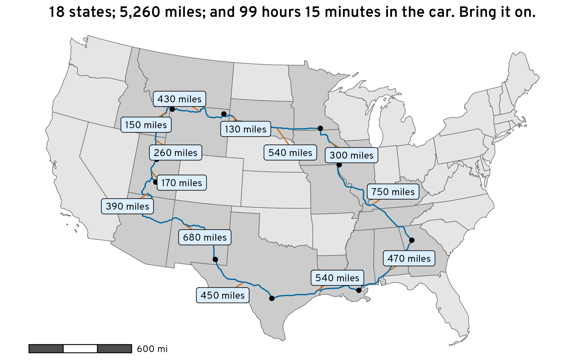

In a couple days, I’m going to drive across the country to Utah, my home state. I haven’t been out west with my whole family in four years—not since 2019 when we moved from Spanish Fork, Utah to Atlanta, Georgia. According to Google Maps, it’s a mere 1,900 miles (3,000 kilometers) through the middle of the United States and should take 28 hours, assuming no stops.
Google Maps route from Atlanta, Georgia to Spanish Fork, Utah
For bonus fun though, my wife and I decided to make this trip even more adventurous and hit as many exciting stops as possible. So rather than drive through the middle of Kansas, we’re going along the southern border on the way there, visiting New Orleans, Louisiana; San Antonio, Texas; Carlsbad Caverns, New Mexico; the Grand Canyon in Arizona; and then camping for a couple days at Capitol Reef National Park in Southern Utah before finally arriving at my aunt’s house in Spanish Fork, Utah. On the way home, we’re going across the northern part of the United States, visiting my sister in Idaho before heading towards Yellowstone in Wyoming; Devil’s Tower in Wyoming; Mount Rushmore in South Dakota; and Nauvoo, Illinois (Mormons!). It’s going to be an awesome—but way longer—mega road trip.
To help keep six kids entertained beyond just plugging them into iPads, my wife made some road trip journals to make the experience more memorable and educational, and we’re bringing a bunch of books and extra materials about each of the stops we’ll be making so they can do research along the way.
I just finished revamping my online data visualization class this week since the summer semester is starting next week, so visualizing data through maps has been on my mind. In my session on visualizing maps, I added a section on making and visualizing your own geocoded data (i.e. plotting specific cities on a map), so I figured it would be neat to visualize this huge road trip somehow to make some maps to include in the kids’ journals.
Getting route coordinates is a lot trickier though, since it involves all sorts of complex algorithms (accounting for road locations, speed limits, traffic, etc.). This is why Google Maps is so invaluable—it does an excellent job of figuring this out. But Google’s data is proprietary.
There’s an R package named {mapsapi} that makes it really easy to get data from the Google Maps API, and if you get an API key from Google (following these instructions), you can extract geocoded {sf}-compatible route data from Google with the mp_directions() function. It’s neat and quick and easy, but it’s expensive. When I first started playing with the maps API in R, I racked up $0.50 in charges just with testing a bunch of routing options. The Google Maps API gives you $200 in free credits every month and I was well below that amount, but it still was a little nervewracking to see that it was that expensive in just an hour of tinkering. Also, setting up the API key was fairly complicated (creating a Google Cloud project, setting up billing, enabling specific services, storing the API key securely on my computer, etc.), and I don’t want to go through that hassle in the future.
Google Maps API costs
I’m a fan of the OpenStreetMap project, and it’s one of the backends (through Nominatim) for {tidygeocoder} (and I used it in a previous blog post showing some coordinates in interactive Leaflet maps). In searching around the internet for open source alternatives to the Google Maps API, I discovered that OpenStreetMap can also do directions and routing through the Open Source Routing Machine (OSRM) project. You can use OSRM’s public demo server for small-scale routing things, or you can install your own local instance through Docker. And super conveniently, there’s also an R package called {osrm} for accessing the OSRM API. This means that it’s possible to pull geocoded routing and directions data into R in an open source (and free!) way.
So let’s see how to use {osrm} and make some neat road trip maps with {sf} and {ggplot2}!
Before officially getting started, let’s load all the packages we need and create some helpful functions and variables:
Code
library(tidyverse)# ggplot, dplyr, and friendslibrary(sf)# Handle spatial data in R in a tidy waylibrary(tigris)# Access geographic data from the US Censuslibrary(tidygeocoder)# Automated geocodinglibrary(osrm)# Access OSRM through Rlibrary(ggrepel)# Nicer non-overlapping labelslibrary(glue)# Easier string interpolationlibrary(scales)# Nicer labeling functionslibrary(patchwork)# Combine plots nicelylibrary(ggspatial)# Nicer map features like scale bars# Custom ggplot theme to make pretty plots# Get the font at https://fonts.google.com/specimen/Overpasstheme_roadtrip<-function(){theme_void(base_family ="Overpass Light")+theme( plot.title =element_text(family ="Overpass", face ="bold", hjust =0.5), strip.text =element_text( family ="Overpass ExtraBold", face ="plain", size =rel(1.1), hjust =0.5))}# Make labels use Overpass by defaultupdate_geom_defaults("label_repel", list(family ="Overpass", fontface ="plain"))update_geom_defaults("label", list(family ="Overpass", fontface ="plain"))update_geom_defaults("text_repel", list(family ="Overpass", fontface ="plain"))update_geom_defaults("text", list(family ="Overpass", fontface ="plain"))# Yellowstone colorsclrs<-NatParksPalettes::natparks.pals("Yellowstone")
Code
#' Format duration in minutes and hours#'#' This function takes a numeric input \code{x} representing a duration in minutes,#' rounds it to the nearest 15 minutes, and formats the result as a string#' indicating the number of hours and minutes in the duration.#'#' @param x A numeric input representing a duration in minutes.#' @return A character vector of formatted duration strings.#' @examples#' fmt_duration(c(93, 1007, 3056))fmt_duration<-function(x){# Round to the nearest 15 minutesn_seconds<-round(seconds(x*60)/(15*60))*(15*60)n_seconds<-seconds_to_period(n_seconds)out<-map_chr(n_seconds, \(n){if(seconds(n)<=59){# If this is less than an hour, don't format anything with hoursglue("{MM} minutes", MM =minute(n))}else{# I only want to format this as a number of hours. If the duration is# longer than 24 hours, seconds_to_period() rolls over into days (i.e.# seconds_to_period(60 * 60 * 24) returns "1d 0H 0M 0S"), and it shows# zero hours. So we extract the day part of the period, multiply it by 24,# and add it to the hour component that we want to displayextra_day_hours<-day(n)*24glue("{HH} hour{s} {MM} minutes", HH =scales::label_comma()(hour(n)+extra_day_hours), MM =minute(n), s =ifelse(hour(n)==1, "", "s"))}})return(out)}fmt_miles<-scales::label_number(accuracy =10, suffix =" miles", big.mark =",")miles_to_meters<-function(x){x*1609.344}meters_to_miles<-function(x){x/1609.344}km_to_miles<-function(x){meters_to_miles(x*1000)}
State data
First we need state boundaries. We can get these from the US Census with states() from {tigris}:
Code
us_states<-states(resolution ="20m", year =2022, cb =TRUE)lower_48<-us_states%>%filter(!(NAME%in%c("Alaska", "Hawaii", "Puerto Rico")))
Next we need to geocode and plot all the stops we’ll be making on the trip. I’ll stick them all in a data frame with columns indicating the direction (with a nod to Bilbo Baggins’s “There and Back Again” journey with the dwarves in The Hobbit) and the day of the leg of the trip:
Code
stops_raw<-tribble(~direction, ~day, ~city,"There", 1, "Atlanta, Georgia", "There", 2, "New Orleans, Louisiana", "There", 3, "San Antonio, Texas", "There", 4, "Carlsbad, New Mexico", "There", 5, "Grand Canyon NP, Arizona","There", 6, "Grover, Utah", "Back again", 1, "Spanish Fork, Utah", "Back again", 1, "Shelley, Idaho", "Back again", 2, "Yellowstone NP, Wyoming","Back again", 2, "Devil's Tower, Wyoming", "Back again", 3, "Mount Rushmore, South Dakota", "Back again", 4, "Albert Lea, Minnesota", "Back again", 5, "Nauvoo, Illinois", "Back again", 6, "Atlanta, Georgia")%>%mutate(direction =fct_inorder(direction))stops_raw## # A tibble: 14 × 3## direction day city ## <fct> <dbl> <chr> ## 1 There 1 Atlanta, Georgia ## 2 There 2 New Orleans, Louisiana ## 3 There 3 San Antonio, Texas ## 4 There 4 Carlsbad, New Mexico ## 5 There 5 Grand Canyon NP, Arizona ## 6 There 6 Grover, Utah ## 7 Back again 1 Spanish Fork, Utah ## 8 Back again 1 Shelley, Idaho ## 9 Back again 2 Yellowstone NP, Wyoming ## 10 Back again 2 Devil's Tower, Wyoming ## 11 Back again 3 Mount Rushmore, South Dakota## 12 Back again 4 Albert Lea, Minnesota ## 13 Back again 5 Nauvoo, Illinois ## 14 Back again 6 Atlanta, Georgia
I could go to Google Maps and right click on each of these places and copy the latitude/longitude coordinates, but that’s not very reproducible and involves a lot of clicking around. We can do it programmatically with geocode() from {tidygeocoder}, but first we need to help the API a little. With most of these places, OpenStreetMap will return the center of the city (like with Atlanta), and that’s fine. With larger places like the Grand Canyon and Yellowstone, though, OpenStreetMap will give coordinates for the middle of the parks, which are literally in the middle of nowhere and will mess up our directions (since it’s not really possible to drive to the middle of the whole Grand Canyon). To fix this we’ll make a little dataset of some more specific addresses and join it to the list of stops. We’ll geocode the more specific address column:
Code
stops_addresses<-tribble(~city, ~address,"Grand Canyon NP, Arizona", "Grand Canyon Visitor Center, Arizona","Yellowstone NP, Wyoming", "Old Faithful, Teton County, Wyoming",)stops_to_geocode<-stops_raw%>%left_join(stops_addresses, by =join_by(city))%>%# Combine the address and city columns, with a preference for addressmutate(address =coalesce(address, city))stops_to_geocode## # A tibble: 14 × 4## direction day city address ## <fct> <dbl> <chr> <chr> ## 1 There 1 Atlanta, Georgia Atlanta, Georgia ## 2 There 2 New Orleans, Louisiana New Orleans, Louisiana ## 3 There 3 San Antonio, Texas San Antonio, Texas ## 4 There 4 Carlsbad, New Mexico Carlsbad, New Mexico ## 5 There 5 Grand Canyon NP, Arizona Grand Canyon Visitor Center, Arizona## 6 There 6 Grover, Utah Grover, Utah ## 7 Back again 1 Spanish Fork, Utah Spanish Fork, Utah ## 8 Back again 1 Shelley, Idaho Shelley, Idaho ## 9 Back again 2 Yellowstone NP, Wyoming Old Faithful, Teton County, Wyoming ## 10 Back again 2 Devil's Tower, Wyoming Devil's Tower, Wyoming ## 11 Back again 3 Mount Rushmore, South Dakota Mount Rushmore, South Dakota ## 12 Back again 4 Albert Lea, Minnesota Albert Lea, Minnesota ## 13 Back again 5 Nauvoo, Illinois Nauvoo, Illinois ## 14 Back again 6 Atlanta, Georgia Atlanta, Georgia
To get the coordinates, we’ll feed the address column to geocode() and then convert the resulting numeric long and lat into an official sf geometry column (with the WGS 84 (−180 to 180) scale):
stops_geocoded## Simple feature collection with 14 features and 4 fields## Geometry type: POINT## Dimension: XY## Bounding box: xmin: -112 ymin: 29.4 xmax: -84.4 ymax: 44.6## Geodetic CRS: WGS 84## # A tibble: 14 × 5## direction day city address geometry## * <fct> <dbl> <chr> <chr> <POINT [°]>## 1 There 1 Atlanta, Georgia Atlanta, Georgia (-84.4 33.7)## 2 There 2 New Orleans, Louisiana New Orleans, Louisiana (-90.1 30)## 3 There 3 San Antonio, Texas San Antonio, Texas (-98.5 29.4)## 4 There 4 Carlsbad, New Mexico Carlsbad, New Mexico (-104 32.4)## 5 There 5 Grand Canyon NP, Arizona Grand Canyon Visitor Center, Arizona (-112 36.1)## 6 There 6 Grover, Utah Grover, Utah (-111 38.2)## 7 Back again 1 Spanish Fork, Utah Spanish Fork, Utah (-112 40.1)## 8 Back again 1 Shelley, Idaho Shelley, Idaho (-112 43.4)## 9 Back again 2 Yellowstone NP, Wyoming Old Faithful, Teton County, Wyoming (-111 44.5)## 10 Back again 2 Devil's Tower, Wyoming Devil's Tower, Wyoming (-105 44.6)## 11 Back again 3 Mount Rushmore, South Dakota Mount Rushmore, South Dakota (-103 43.9)## 12 Back again 4 Albert Lea, Minnesota Albert Lea, Minnesota (-93.4 43.6)## 13 Back again 5 Nauvoo, Illinois Nauvoo, Illinois (-91.4 40.6)## 14 Back again 6 Atlanta, Georgia Atlanta, Georgia (-84.4 33.7)
Atlanta is in there twice, so we’ll need to drop the last row so that we don’t plot the points and labels for it twice:
Next we need to figure out the routes between each of these points. The osrmRoute() function in {osrm} takes two main arguments: (1) coordinates for the source location (src) and (2) coordinates for the destination location (dst). To make it easy to work with routing data in a dataframe, we need to manipulate the data a bit so that we get a row per route, with columns for the origin and destination cities.
We’ll create a copy of the geometry column in stops_geocoded and shift it forward one row with lead() and drop the last row because it doesn’t have a destination:
Code
routes_raw<-stops_geocoded%>%select(-address)%>%rename( origin_geometry =geometry, origin_city =city)%>%mutate( destination_geometry =lead(origin_geometry), destination_city =lead(origin_city))%>%filter(row_number()!=n())routes_raw## Simple feature collection with 13 features and 4 fields## Active geometry column: origin_geometry## Geometry type: POINT## Dimension: XY## Bounding box: xmin: -112 ymin: 29.4 xmax: -84.4 ymax: 44.6## Geodetic CRS: WGS 84## # A tibble: 13 × 6## direction day origin_city origin_geometry destination_geometry destination_city ## * <fct> <dbl> <chr> <POINT [°]> <POINT [°]> <chr> ## 1 There 1 Atlanta, Georgia (-84.4 33.7) (-90.1 30) New Orleans, Louisiana ## 2 There 2 New Orleans, Louisiana (-90.1 30) (-98.5 29.4) San Antonio, Texas ## 3 There 3 San Antonio, Texas (-98.5 29.4) (-104 32.4) Carlsbad, New Mexico ## 4 There 4 Carlsbad, New Mexico (-104 32.4) (-112 36.1) Grand Canyon NP, Arizona ## 5 There 5 Grand Canyon NP, Arizona (-112 36.1) (-111 38.2) Grover, Utah ## 6 There 6 Grover, Utah (-111 38.2) (-112 40.1) Spanish Fork, Utah ## 7 Back again 1 Spanish Fork, Utah (-112 40.1) (-112 43.4) Shelley, Idaho ## 8 Back again 1 Shelley, Idaho (-112 43.4) (-111 44.5) Yellowstone NP, Wyoming ## 9 Back again 2 Yellowstone NP, Wyoming (-111 44.5) (-105 44.6) Devil's Tower, Wyoming ## 10 Back again 2 Devil's Tower, Wyoming (-105 44.6) (-103 43.9) Mount Rushmore, South Dakota## 11 Back again 3 Mount Rushmore, South Dakota (-103 43.9) (-93.4 43.6) Albert Lea, Minnesota ## 12 Back again 4 Albert Lea, Minnesota (-93.4 43.6) (-91.4 40.6) Nauvoo, Illinois ## 13 Back again 5 Nauvoo, Illinois (-91.4 40.6) (-84.4 33.7) Atlanta, Georgia
With the data like this, we can now feed each row individually to osrmRoute and get geocoded paths between each origin and destination:
The route details are included in a nested data frame list column named route, so we’ll need to unnest it. The resulting data frame now has three different geometry columns (!) for the origin point, destination point, and the route, so we’ll set the route column as the data frame’s primary geometry column (which makes it so we can just use geom_sf(data = routes_geocoded) instead of geom_sf(data = routes_geocoded, aes(geometry = whatever))). The route data also includes some helpful details about the distance (in kilometers) and duration (in minutes), so we’ll create nicely formatted text-based versions of these too:
Let’s see how this looks! Because we set the default geometry of routes_geocoded to the route, geom_sf(data = routes_geocoded) will automatically plot the LINESTRING geometries for the routes as paths:
Automatically geocoded routes between all our road trip stops
AHH that’s so cool! It works!
We’re not done yet though—let’s make this even fancier!
States crossed through
We’re going to be driving through a lot of states. Let’s highlight each of the states we’ll cross through to see how many there are. To do this we can use st_intersection() to find which of the lower_48 states contain a part of the different routes. We’ll then make a copy of lower_48 with a new column indicating if we’ll visit the state:
Code
states_crossed_through<-st_intersection(st_transform(lower_48, st_crs(routes_geocoded)),routes_geocoded)# There are 32 rows here, but 18 unique states (i.e. one day will end in a state# and start the next day in the same state, so it gets counted twice)states_crossed_through%>%select(STATEFP, NAME, direction, day)## Simple feature collection with 32 features and 4 fields## Geometry type: GEOMETRY## Dimension: XY## Bounding box: xmin: -113 ymin: 29.4 xmax: -84.4 ymax: 44.9## Geodetic CRS: WGS 84## First 10 features:## STATEFP NAME direction day geometry## 4 13 Georgia There 1 LINESTRING (-84.4 33.7, -84...## 10 22 Louisiana There 1 LINESTRING (-89.6 30.3, -89...## 32 28 Mississippi There 1 LINESTRING (-88.4 30.5, -88...## 41 01 Alabama There 1 LINESTRING (-85.2 32.9, -85...## 1 48 Texas There 2 LINESTRING (-93.7 30.1, -93...## 10.1 22 Louisiana There 2 LINESTRING (-90.1 30, -90.3...## 1.1 48 Texas There 3 LINESTRING (-98.5 29.4, -98...## 36 35 New Mexico There 3 LINESTRING (-104 32, -104 3...## 36.1 35 New Mexico There 4 LINESTRING (-104 32.4, -104...## 47 04 Arizona There 4 LINESTRING (-109 35.4, -109...unique(states_crossed_through$NAME)## [1] "Georgia" "Louisiana" "Mississippi" "Alabama" "Texas" "New Mexico" "Arizona" "Utah" "Idaho" "Montana" "Wyoming" "South Dakota" "Minnesota" "Illinois" "Iowa" "Kentucky" "Missouri" "Tennessee"# Create a column that flags if the state is cross throughlower_48_highlighted<-lower_48%>%mutate(visited =NAME%in%unique(states_crossed_through$NAME))
Now we can fill using the visited column and make the visited states subtly darker:
We’re going to drive through 18 states, with a total distance of 5,260 miles over the span of 99 hours 15 minutes (!!)
We can use these distance or duration columns to add some extra detail to the map:
Code
ggplot()+geom_sf(data =lower_48_highlighted, aes(fill =visited))+geom_sf(data =routes_geocoded, color =clrs[1])+geom_sf(data =all_stops_unique)+geom_label_repel( data =routes_geocoded,aes(label =distance_text, geometry =route_geometry), stat ="sf_coordinates", seed =12345, size =3, segment.color =clrs[3], min.segment.length =0, fill =colorspace::lighten(clrs[5], 0.8))+annotation_scale( location ="bl", bar_cols =c("grey30", "white"), unit_category ="imperial", text_family ="Overpass")+scale_fill_manual(values =c("grey90", "grey80"), guide ="none")+coord_sf(crs =st_crs("ESRI:102003"))+# Alberslabs(title =glue("{n_states} states; {total_distance}; and {total_time} in the car. Bring it on."))+theme_roadtrip()

Map of road trip showing the distances between each stop
Faceting
We have some nice tidy data here with columns for direction and day, which makes it easy to subset the data. We can make separate maps for the drive there and the drive back, or even separate maps for each day of the trip. Let’s add facet_wrap() to the plot:
The highlighted states are the same in both facets
The final destination point is missing in each facet (Spanish Fork, Utah in the “There” facet; Atlanta, Georgia in the “Back Again” facet)
Both of these issues are fixable though.
Fixing state highlighting
First we need to change how we identify the states we’ll cross through. Before, we kept the unique state names, but this stripped away the details about the direction of the trip, so we’ll find all the distinct combinations of direction and state and then join that little dataset to lower_48 to make the visited column:
Code
states_crossed_through_better<-st_intersection(st_transform(lower_48, st_crs(routes_geocoded)),routes_geocoded)%>%distinct(direction, NAME)states_crossed_through_better## direction NAME## 4 There Georgia## 10 There Louisiana## 32 There Mississippi## 41 There Alabama## 1 There Texas## 36 There New Mexico## 47 There Arizona## 35 There Utah## 12 Back again Idaho## 35.2 Back again Utah## 15 Back again Montana## 25 Back again Wyoming## 23 Back again South Dakota## 16 Back again Minnesota## 14 Back again Illinois## 18 Back again Iowa## 3 Back again Kentucky## 4.1 Back again Georgia## 7 Back again Missouri## 9 Back again Tennesseelower_48_highlighted_better<-lower_48%>%left_join(states_crossed_through_better, by =join_by(NAME))%>%mutate(visited =!is.na(direction))as_tibble(lower_48_highlighted_better)## # A tibble: 51 × 12## STATEFP STATENS AFFGEOID GEOID STUSPS NAME LSAD ALAND AWATER direction geometry visited## <chr> <chr> <chr> <chr> <chr> <chr> <chr> <dbl> <dbl> <fct> <MULTIPOLYGON [°]> <lgl> ## 1 48 01779801 0400000US48 48 TX Texas 00 676685555821 18974391187 There (((-107 31.9, -107 32, -107 32, -107 32, -106 32, -106 32, -106 32, -106 32, -105 32... TRUE ## 2 06 01779778 0400000US06 06 CA California 00 403673617862 20291712025 <NA> (((-119 33.5, -118 33.5, -118 33.4, -118 33.4, -118 33.3, -118 33.3, -118 33.3, -118... FALSE ## 3 21 01779786 0400000US21 21 KY Kentucky 00 102266581101 2384240769 Back again (((-89.5 36.6, -89.5 36.6, -89.4 36.6, -89.4 36.6, -89.3 36.6, -89.3 36.6, -89.3 36.... TRUE ## 4 13 01705317 0400000US13 13 GA Georgia 00 149486268417 4418716153 There (((-85.6 35, -85.5 35, -85.4 35, -85.4 35, -85.3 35, -85.3 35, -85 35, -85 35, -85 3... TRUE ## 5 13 01705317 0400000US13 13 GA Georgia 00 149486268417 4418716153 Back again (((-85.6 35, -85.5 35, -85.4 35, -85.4 35, -85.3 35, -85.3 35, -85 35, -85 35, -85 3... TRUE ## 6 55 01779806 0400000US55 55 WI Wisconsin 00 140292518676 29343193162 <NA> (((-86.9 45.4, -86.8 45.5, -86.8 45.4, -86.9 45.4, -86.9 45.3, -87 45.4, -86.9 45.4)... FALSE ## 7 41 01155107 0400000US41 41 OR Oregon 00 248630319014 6169061220 <NA> (((-125 42.8, -124 43, -124 43, -124 43.1, -124 43.2, -124 43.2, -124 43.3, -124 43.... FALSE ## 8 29 01779791 0400000US29 29 MO Missouri 00 178052253239 2487526202 Back again (((-95.8 40.6, -95.5 40.6, -95.4 40.6, -95.3 40.6, -95.2 40.6, -95.1 40.6, -94.9 40.... TRUE ## 9 51 01779803 0400000US51 51 VA Virginia 00 102258178227 8528072639 <NA> (((-76 37.3, -76 37.4, -76 37.4, -75.9 37.5, -75.9 37.6, -75.9 37.6, -75.9 37.7, -75... FALSE ## 10 47 01325873 0400000US47 47 TN Tennessee 00 106792368794 2322190840 Back again (((-90.3 35, -90.3 35, -90.2 35.1, -90.2 35.1, -90.2 35.1, -90.1 35.1, -90.1 35.2, -... TRUE ## # ℹ 41 more rows
Let’s see how it works by adding a new geom_sf() layer for the highlighted states. We need to double up here with both lower_48 and lower_48_highlighted_better because if we only plot the highlighted states, each facet will only contain those states and not the underlying US map, which we don’t want.
Each facet now only shows the states corresponding to each direction
There, we fixed issue #1. ✅
Issue #2—the missing endpoint in each facet—is a little trickier to deal with, but still doable. Before messing with the real data, let’s look at a simpler toy example first. Here’s a little dataset with three different “routes” between cities. The coordinates here aren’t actually coordinates—they’re just some arbitrary numbers. But that’s okay—this basically mirrors what we have in routes_geocoded
Fixing missing destination cities
Code
example<-tribble(~day, ~origin_city, ~destination_city, ~origin_coords, ~destination_coords,1, "Atlanta", "Boston", 1234, 5678,2, "Boston", "Chicago", 5678, 91011,3, "Chicago", "Denver", 91011, 131415)example## # A tibble: 3 × 5## day origin_city destination_city origin_coords destination_coords## <dbl> <chr> <chr> <dbl> <dbl>## 1 1 Atlanta Boston 1234 5678## 2 2 Boston Chicago 5678 91011## 3 3 Chicago Denver 91011 131415
The reason we’re not getting the final point in each facet or subset is because there are only three rows here, but four cities. If we plotted the origin_coords column, Atlanta would be missing; if we plotted the destination_coords column, Denver would be missing. We need to manipulate this data so that it has 4 rows (Atlanta, Boston, Chicago, Denver), with the correct coordinates for each city.
There’s an easy way to do this with pivot_longer() from {tidyr}. We can pivot with multiple columns that follow a pattern in their names. Here, all four of the columns we care about are are prefixed destination or origin, followed by a _. If we specify these name settings in pivot_longer(), it’ll automatically create a column named type for destination and origin and it’ll put the rest of the data in corresponding columns:
Code
example%>%pivot_longer( cols =c(origin_city, destination_city, origin_coords, destination_coords), names_to =c("type", ".value"), names_sep ="_")## # A tibble: 6 × 4## day type city coords## <dbl> <chr> <chr> <dbl>## 1 1 origin Atlanta 1234## 2 1 destination Boston 5678## 3 2 origin Boston 5678## 4 2 destination Chicago 91011## 5 3 origin Chicago 91011## 6 3 destination Denver 131415
Now we have one row per city, which is close to what we need. Boston and Chicago are duplicated (since they’re both destination and origin cities), so we need to filter out duplicate cities. There are lots of ways to do this—my preferred way is to group by city and keep the first row in each group using slice():
Code
example%>%pivot_longer( cols =c(origin_city, destination_city, origin_coords, destination_coords), names_to =c("type", ".value"), names_sep ="_")%>%group_by(city)%>%slice(1)## # A tibble: 4 × 4## # Groups: city [4]## day type city coords## <dbl> <chr> <chr> <dbl>## 1 1 origin Atlanta 1234## 2 1 destination Boston 5678## 3 2 destination Chicago 91011## 4 3 destination Denver 131415
Woohoo! A dataset with four rows and the correct coordinates for each city. If we could plot this, we’d get both endpoints (Atlanta and Denver).
This same double pivot approach (magically!!) works with the special geometry columns in our actual routes data:
We can also make separate maps that are zoomed in on each day of the trip in addition these bigger overarching ones. This will allow us to add more details like driving time and distances without getting too crowded on the map.
We’ll create a mini map of the first day by itself, and then scale up the process to make all the mini maps programmatically.
One day of the trip
First we’ll extract the route, cities, and states for the first day of the trip out there:
ggplot()+geom_sf(data =lower_48_highlighted_day1, aes(fill =visited))+geom_sf(data =route_day1, color =clrs[1])+geom_sf(data =stops_day1)+geom_sf_label( data =stops_day1, aes(label =city), nudge_y =miles_to_meters(80))+scale_fill_manual(values =c("grey90", "grey80"), guide ="none")+coord_sf(crs =st_crs("ESRI:102003"))+# Alberstheme_roadtrip()
Drive for the first day on the full US map
Yep, it worked. But we don’t need to show the whole map—we want to zoom in on just the area around the route for the day. To do this, we can use st_bbox() to extract a rectangle of coordinates around the route, creating a bounding box for the map that we can then use with coord_sf() to zoom in.
st_bbox() returns a named vector of numbers with the x- and y-axis limits:
Since the elements are all named, we can use them to specify the different values in coord_sf(). First we’ll temporarily stop using the Albers projection, since the numbers we’ve extracted with st_bbox() are on the WGS 84 (−180 to 180) scale and Albers uses meters, which will make the map not work. (But we’ll fix that in a minute!)
Code
ggplot()+geom_sf(data =lower_48_highlighted_day1, aes(fill =visited))+geom_sf(data =route_day1, color =clrs[1])+geom_sf(data =stops_day1)+geom_sf_label( data =stops_day1, aes(label =city),# We're not using Albers, so this isn't measured in meters; it's decimal degrees nudge_y =0.15)+annotation_scale( location ="bl", bar_cols =c("grey30", "white"), unit_category ="imperial", text_family ="Overpass")+scale_fill_manual(values =c("grey90", "grey80"), guide ="none")+coord_sf( xlim =c(bbox["xmin"], bbox["xmax"]), ylim =c(bbox["ymin"], bbox["ymax"]))+theme_roadtrip()
Trip for the first day, but zoomed in a little too far
We’re zoomed in (yay) but the edges of the bounding box window are too close to the points and the route, and the labels are cropped funny. Also, to shift the labels up we had to think in decimal degrees instead of meters, which I can’t do naturally. And also, we can’t change projections—because we’re specifying the bounding box coordinates in decimal degrees, we’re stuck with WGS 84 instead of Albers or any other projection. These are all fixable issues, fortunately.
To fix all this, we’ll expand the bounding box window by 150 miles on all sides using st_buffer() and then convert the coordinates to Albers before extracting the coordinates of the window for plotting:
Code
bbox_nice<-route_day1%>%st_bbox()%>%# Extract the bounding box of the coordinatesst_as_sfc()%>%# Convert the bounding box matrix back to an sf objectst_buffer(miles_to_meters(150))%>%# Add 150 miles to all sidesst_transform("ESRI:102003")%>%# Switch to Albersst_bbox()# Extract the bounding box of the expanded boxbbox_nice## xmin ymin xmax ymax ## 301851 -1071395 1366321 -105313
These are no longer in decimal degrees, so we can use them with the Albers projection. We’ve also added a 150-mile buffer around the window, so we should have room for all the labels now. Let’s check it:
Code
ggplot()+geom_sf(data =lower_48_highlighted_day1, aes(fill =visited))+geom_sf(data =route_day1, color =clrs[1])+geom_sf(data =stops_day1)+geom_sf_label( data =stops_day1, aes(label =city),# We're in Albers again, so we can work with meters (or miles) nudge_y =miles_to_meters(30))+annotation_scale( location ="bl", bar_cols =c("grey30", "white"), unit_category ="imperial", text_family ="Overpass", width_hint =0.4)+scale_fill_manual(values =c("grey90", "grey80"), guide ="none")+coord_sf( xlim =c(bbox_nice["xmin"], bbox_nice["xmax"]), ylim =c(bbox_nice["ymin"], bbox_nice["ymax"]), crs =st_crs("ESRI:102003"))+theme_roadtrip()
Trip for the first day, correctly zoomed and using the Albers projection
Heck yeah.
However, the shapes look a little curved and distorted because we’re zoomed in so much. Albers is great for big countries, but on a small scale like this, WGS 84 is probably fine. That’s what Google Maps does—it only starts getting weird and curvy along horizontal latitude lines when you zoom out really far. Let’s do the first day map one last time without the Albers conversion:
Code
bbox_nice<-route_day1%>%st_bbox()%>%# Extract the bounding box of the coordinatesst_as_sfc()%>%# Convert the bounding box matrix back to an sf objectst_buffer(miles_to_meters(150))%>%# Add 150 miles to all sidesst_bbox()# Extract the bounding box of the expanded boxggplot()+geom_sf(data =lower_48_highlighted_day1, aes(fill =visited))+geom_sf(data =route_day1, color =clrs[1])+geom_sf(data =stops_day1)+geom_sf_label( data =stops_day1, aes(label =city),# We're in WGS 84, so these are decimal degrees nudge_y =0.5)+geom_label_repel( data =route_day1,aes(label =distance_text, geometry =route_geometry), stat ="sf_coordinates", seed =12345, family ="Overpass ExtraBold", fontface ="plain", size =3.5, fill =colorspace::lighten(clrs[5], 0.8), color =clrs[1], segment.color ="grey50", min.segment.length =0)+annotation_scale( location ="bl", bar_cols =c("grey30", "white"), unit_category ="imperial", text_family ="Overpass", width_hint =0.3)+scale_fill_manual(values =c("grey90", "grey80"), guide ="none")+coord_sf( xlim =c(bbox_nice["xmin"], bbox_nice["xmax"]), ylim =c(bbox_nice["ymin"], bbox_nice["ymax"]), crs =st_crs("EPSG:4326"))+theme_roadtrip()
Trip for the first day, correctly zoomed and using the WGS 84 projection
Neat. The northern borders of Georgia, Alabama, and Mississippi are all flat here, which is great.
All the days of the trip
We successfully plotted one day of the trip. But we’ll be driving for 11 days (!) and need 11 plots. I don’t want to copy/paste this all code 11 times, so we’ll stick each major step into a function:
Code
# Take a set of routes and do some pivoting to create a dataset that includes# the start and end pointsexpand_endpoints<-function(routes){routes%>%pivot_longer( cols =c(origin_city, destination_city, origin_geometry, destination_geometry), names_to =c("type", ".value"), names_sep ="_")%>%group_by(city)%>%slice(1)%>%arrange(desc(type))%>%st_set_geometry("geometry")}# Take a set of routes and return a dataset with a flag marking which states they crossfind_states<-function(routes){# st_intersection() complains about innocuous things so suppress the warningssuppressWarnings({states_crossed<-st_intersection(st_transform(lower_48, st_crs(routes)),routes)%>%distinct(NAME)})lower_48%>%mutate(visited =NAME%in%states_crossed$NAME)}# Use routes, stopes, and states to build a plotbuild_day_map<-function(routes, stops, states, direction, day){bbox_nice<-routes%>%st_bbox()%>%# Extract the bounding box of the coordinatesst_as_sfc()%>%# Convert the bounding box matrix back to an sf objectst_buffer(miles_to_meters(150))%>%# Add 150 miles to all sidesst_bbox()# Extract the bounding box of the expanded boxggplot()+geom_sf(data =states, aes(fill =visited))+geom_sf(data =routes, color =clrs[1])+geom_sf(data =stops)+geom_sf_label( data =stops,aes(label =city),# We're in WGS 84, so these are decimal degrees nudge_y =0.4)+geom_label_repel( data =routes,aes(label =distance_text, geometry =route_geometry), stat ="sf_coordinates", seed =12345, family ="Overpass ExtraBold", fontface ="plain", size =3.5, fill =colorspace::lighten(clrs[5], 0.8), color =clrs[1], segment.color ="grey50", min.segment.length =0)+annotation_scale( location ="bl", bar_cols =c("grey30", "white"), unit_category ="imperial", text_family ="Overpass", width_hint =0.4)+scale_fill_manual(values =c("grey90", "grey80"), guide ="none")+coord_sf( xlim =c(bbox_nice["xmin"], bbox_nice["xmax"]), ylim =c(bbox_nice["ymin"], bbox_nice["ymax"]), crs =st_crs("EPSG:4326"))+labs(title =glue("{direction}, day {day}"))+theme_roadtrip()}
With everything functionalized, we can do some super wild {purrr} magic. If we take routes_geocoded and group it by direction and day (so there’s a group per driving day), we’ll get a list column that contains the geocded coordinates for each day:
Code
daily_plots<-routes_geocoded%>%group_by(direction, day)%>%nest(.key ="routes")daily_plots## # A tibble: 11 × 3## # Groups: direction, day [11]## direction day routes ## <fct> <dbl> <list> ## 1 There 1 <sf [1 × 12]>## 2 There 2 <sf [1 × 12]>## 3 There 3 <sf [1 × 12]>## 4 There 4 <sf [1 × 12]>## 5 There 5 <sf [1 × 12]>## 6 There 6 <sf [1 × 12]>## 7 Back again 1 <sf [2 × 12]>## 8 Back again 2 <sf [2 × 12]>## 9 Back again 3 <sf [1 × 12]>## 10 Back again 4 <sf [1 × 12]>## 11 Back again 5 <sf [1 × 12]># Check the first daydaily_plots$routes[[1]]## Simple feature collection with 1 feature and 9 fields## Active geometry column: route_geometry## Geometry type: LINESTRING## Dimension: XY## Bounding box: xmin: -90.1 ymin: 30 xmax: -84.4 ymax: 33.7## Geodetic CRS: WGS 84## # A tibble: 1 × 12## origin_city origin_geometry destination_geometry destination_city route_src route_dst route_duration route_distance route_geometry distance_miles distance_text duration_text ## <chr> <POINT [°]> <POINT [°]> <chr> <chr> <chr> <dbl> <dbl> <LINESTRING [°]> <dbl> <chr> <chr> ## 1 Atlanta, Georgia (-84.4 33.7) (-90.1 30) New Orleans, Louisiana src dst 513. 753. (-84.4 33.7, -84.5 33.6, -84.8 33.4, -84.9 33.1, -85.1 32.9, -85.4 32.6, -85.7 32.5, -... 468. 470 miles 8 hours 30 minutes# Check the first day of the return tripdaily_plots$routes[[7]]## Simple feature collection with 2 features and 9 fields## Active geometry column: route_geometry## Geometry type: LINESTRING## Dimension: XY## Bounding box: xmin: -112 ymin: 40.1 xmax: -111 ymax: 44.7## Geodetic CRS: WGS 84## # A tibble: 2 × 12## origin_city origin_geometry destination_geometry destination_city route_src route_dst route_duration route_distance route_geometry distance_miles distance_text duration_text ## <chr> <POINT [°]> <POINT [°]> <chr> <chr> <chr> <dbl> <dbl> <LINESTRING [°]> <dbl> <chr> <chr> ## 1 Spanish Fork, Utah (-112 40.1) (-112 43.4) Shelley, Idaho src dst 262. 411. (-112 40.1, -112 40.2, -112 40.3, -112 40.5, -112 41, -112 41.1, -112 41.2, -112 41.6,... 256. 260 miles 4 hours 15 minutes## 2 Shelley, Idaho (-112 43.4) (-111 44.5) Yellowstone NP, Wyoming src dst 199. 240. (-112 43.4, -112 43.8, -112 43.9, -112 43.9, -112 44, -112 44, -111 44.1, -111 44.2, -... 149. 150 miles 3 hours 15 minutes
We can then use purrr::map() and purrr::pmap() to feed that nested list-column data frame through the different functions to expand endpoints, find crossed-through states, and build the daily plot.
Before looking at the plots, check out all these nested datasets! Each day has a dataset for the routes, stops, states, and final plot, and everything is contained here in a data frame. MAGICAL.
Or, instead of extracting each plot individually like this, we can use wrap_plots() from {patchwork} to combine a whole list of plots automatically, though we have a lot less control over the plots this way—some of the maps use a landscape orientation and some use a portrait orientation, so they’re a big mess when combined like this:
Code
daily_plots%>%pull(plot)%>%wrap_plots()
Time to add some maps to road trip journals and finish packing!
Citation
BibTeX citation:
@online{heiss2023,
author = {Heiss, Andrew},
title = {How to Make Fancy Road Trip Maps with {R} and
{OpenStreetMap}},
date = {2023-06-01},
url = {https://www.andrewheiss.com/blog/2023/06/01/geocoding-routing-openstreetmap-r/},
doi = {10.59350/rgwda-0tv16},
langid = {en}
}
---title: "How to make fancy road trip maps with R and OpenStreetMap"date: 2023-06-01description: "Use R to get geocoded location and routing data from OpenStreetMap and explore our family's impending 5,000 mile road trip around the USA"image: index_files/figure-html/plot-routes-stops-distances-1.pngtwitter-card: image: "index_files/figure-html/plot-routes-stops-distances-1.png"open-graph: image: "index_files/figure-html/plot-routes-stops-distances-1.png"categories: - r - tidyverse - ggplot - gis - mapsformat: html: reference-location: margin code-fold: showdoi: 10.59350/rgwda-0tv16citation: true---```{r setup, include=FALSE}knitr::opts_chunk$set(fig.align = "center", fig.retina = 3, fig.width = 7, fig.height = (7 / 1.618), out.width = "100%", collapse = TRUE, dev = "ragg_png", cache.extra = 123) # Change number to invalidate cacheknitr::opts_chunk$set(message = FALSE)options(digits = 3, width = 300, dplyr.summarise.inform = FALSE)set.seed(1234)```In a couple days, I'm going to drive across the country to Utah, my home state. I haven't been out west with my whole family in four years—not since 2019 when we moved from Spanish Fork, Utah to Atlanta, Georgia. According to Google Maps, [it's a mere 1,900 miles](https://goo.gl/maps/aGXJPL85LMTW2cuS9) (3,000 kilometers) through the middle of the United States and should take 28 hours, assuming no stops. For bonus fun though, my wife and I decided to make this trip even more adventurous and hit as many exciting stops as possible. So rather than drive through the middle of Kansas, we're going along the southern border on the way there, visiting New Orleans, Louisiana; San Antonio, Texas; [Carlsbad Caverns](https://en.wikipedia.org/wiki/Carlsbad_Caverns_National_Park), New Mexico; the [Grand Canyon](https://en.wikipedia.org/wiki/Grand_Canyon) in Arizona; and then camping for a couple days at [Capitol Reef National Park](https://en.wikipedia.org/wiki/Capitol_Reef_National_Park) in Southern Utah before finally arriving at my aunt's house in Spanish Fork, Utah. On the way home, we're going across the northern part of the United States, visiting my sister in Idaho before heading towards [Yellowstone](https://en.wikipedia.org/wiki/Yellowstone_National_Park) in Wyoming; [Devil's Tower](https://en.wikipedia.org/wiki/Devils_Tower) in Wyoming; [Mount Rushmore](https://en.wikipedia.org/wiki/Mount_Rushmore) in South Dakota; and [Nauvoo, Illinois](https://en.wikipedia.org/wiki/Nauvoo,_Illinois) ([Mormons!](https://www.churchofjesuschrist.org/learn/locations/historic-nauvoo)). It's going to be an awesome—but *way* longer—mega road trip. To help keep six kids entertained beyond just plugging them into iPads, my wife made some road trip journals to make the experience more memorable and educational, and we're bringing a bunch of books and extra materials about each of the stops we'll be making so they can do research along the way.I just finished revamping my [online data visualization class](https://datavizs23.classes.andrewheiss.com/) this week since the summer semester is starting next week, so visualizing data through maps has been on my mind. In my session on visualizing maps, [I added a section on making and visualizing your own geocoded data](https://datavizs23.classes.andrewheiss.com/example/12-example.html#making-your-own-geocoded-data) (i.e. plotting specific cities on a map), so I figured it would be neat to visualize this huge road trip somehow to make some maps to include in the kids' journals.Getting the latitude and longitude coordinates for specific cities or addresses is super easy—you can either [right click on Google Maps and copy specific coordinates](https://datavizs23.classes.andrewheiss.com/example/12-example.html#making-your-own-geocoded-data), or you can [automate it](https://datavizs23.classes.andrewheiss.com/example/12-example.html#automatic-geoencoding-by-address) with the [{tidygeocoder} package](https://jessecambon.github.io/tidygeocoder/) in R. Getting route coordinates is a lot trickier though, since it involves all sorts of complex algorithms (accounting for road locations, speed limits, traffic, etc.). This is why Google Maps is so invaluable—it does an excellent job of figuring this out. But Google's data is proprietary. There's an R package named [{mapsapi}](https://github.com/michaeldorman/mapsapi) that makes it really easy to get data from the Google Maps API, and if you get an API key from Google ([following these instructions](https://developers.google.com/maps/documentation/directions/start#create-project)), you can extract geocoded {sf}-compatible route data from Google with the `mp_directions()` function. It's neat and quick and easy, but it's expensive. When I first started playing with the maps API in R, I racked up \$0.50 in charges just with testing a bunch of routing options. The Google Maps API gives you \$200 in free credits every month and I was well below that amount, but it still was a little nervewracking to see that it was that expensive in just an hour of tinkering. Also, setting up the API key was fairly complicated (creating a Google Cloud project, setting up billing, enabling specific services, storing the API key securely on my computer, etc.), and I don't want to go through that hassle in the future.I'm a fan of the [OpenStreetMap project](https://www.openstreetmap.org/), and it's [one of the backends](https://jessecambon.github.io/tidygeocoder/articles/geocoder_services.html) (through [Nominatim](https://nominatim.org/)) for {tidygeocoder} (and I used it in a [previous blog post](https://www.andrewheiss.com/blog/2023/04/26/middle-earth-mapping-sf-r-gis/#in-the-united-states) showing some coordinates in interactive Leaflet maps). In searching around the internet for open source alternatives to the Google Maps API, I discovered that OpenStreetMap can also do directions and routing through the [Open Source Routing Machine (OSRM) project](http://project-osrm.org/). You can use OSRM's [public demo server](https://map.project-osrm.org) for small-scale routing things, or you can [install your own local instance through Docker](https://github.com/Project-OSRM/osrm-backend#using-docker). And super conveniently, there's also an R package called [{osrm}](https://github.com/riatelab/osrm) for accessing the OSRM API. This means that it's possible to pull geocoded routing and directions data into R in an open source (and free!) way.So let's see how to use {osrm} and make some neat road trip maps with {sf} and {ggplot2}!# Getting started## Who this post is forHere's what I assume you know:- You're familiar with [R](https://www.r-project.org/) and the [tidyverse](https://www.tidyverse.org/) (particularly [{dplyr}](https://dplyr.tidyverse.org/) and [{ggplot2}](https://ggplot2.tidyverse.org/)).- You're somewhat familiar with [{sf}](https://r-spatial.github.io/sf/) for working with geographic data. I have a [whole tutorial here](https://datavizs23.classes.andrewheiss.com/example/12-example.html) and a [simplified one here](https://www.andrewheiss.com/blog/2023/04/26/middle-earth-mapping-sf-r-gis/#lightning-quick-overview-of-sf-and-shapefiles) and the [{sf} documentation has a ton of helpful vignettes and blog posts](https://r-spatial.github.io/sf/), and there are also two free books about it: [*Spatial Data Science*](https://r-spatial.org/book/) and [*Geocomputation with R*](https://r.geocompx.org/). Also [check this fantastic post out](https://www.jessesadler.com/post/simple-feature-objects/) to learn more about the anatomy of a `geometry` column with {sf}.## Packages and functionsBefore officially getting started, let’s load all the packages we need and create some helpful functions and variables:```{r libraries, warning=FALSE, message=FALSE}library(tidyverse) # ggplot, dplyr, and friendslibrary(sf) # Handle spatial data in R in a tidy waylibrary(tigris) # Access geographic data from the US Censuslibrary(tidygeocoder) # Automated geocodinglibrary(osrm) # Access OSRM through Rlibrary(ggrepel) # Nicer non-overlapping labelslibrary(glue) # Easier string interpolationlibrary(scales) # Nicer labeling functionslibrary(patchwork) # Combine plots nicelylibrary(ggspatial) # Nicer map features like scale bars# Custom ggplot theme to make pretty plots# Get the font at https://fonts.google.com/specimen/Overpasstheme_roadtrip <- function() { theme_void(base_family = "Overpass Light") + theme( plot.title = element_text(family = "Overpass", face = "bold", hjust = 0.5), strip.text = element_text( family = "Overpass ExtraBold", face = "plain", size = rel(1.1), hjust = 0.5) )}# Make labels use Overpass by defaultupdate_geom_defaults("label_repel", list(family = "Overpass", fontface = "plain"))update_geom_defaults("label", list(family = "Overpass", fontface = "plain"))update_geom_defaults("text_repel", list(family = "Overpass", fontface = "plain"))update_geom_defaults("text", list(family = "Overpass", fontface = "plain"))# Yellowstone colorsclrs <- NatParksPalettes::natparks.pals("Yellowstone")``````{r helper-functions}#' Format duration in minutes and hours#'#' This function takes a numeric input \code{x} representing a duration in minutes,#' rounds it to the nearest 15 minutes, and formats the result as a string#' indicating the number of hours and minutes in the duration.#'#' @param x A numeric input representing a duration in minutes.#' @return A character vector of formatted duration strings.#' @examples#' fmt_duration(c(93, 1007, 3056))fmt_duration <- function(x) { # Round to the nearest 15 minutes n_seconds <- round(seconds(x * 60) / (15 * 60)) * (15 * 60) n_seconds <- seconds_to_period(n_seconds) out <- map_chr(n_seconds, \(n) { if (seconds(n) <= 59) { # If this is less than an hour, don't format anything with hours glue("{MM} minutes", MM = minute(n)) } else { # I only want to format this as a number of hours. If the duration is # longer than 24 hours, seconds_to_period() rolls over into days (i.e. # seconds_to_period(60 * 60 * 24) returns "1d 0H 0M 0S"), and it shows # zero hours. So we extract the day part of the period, multiply it by 24, # and add it to the hour component that we want to display extra_day_hours <- day(n) * 24 glue("{HH} hour{s} {MM} minutes", HH = scales::label_comma()(hour(n) + extra_day_hours), MM = minute(n), s = ifelse(hour(n) == 1, "", "s") ) } }) return(out)}fmt_miles <- scales::label_number(accuracy = 10, suffix = " miles", big.mark = ",")miles_to_meters <- function(x) { x * 1609.344}meters_to_miles <- function(x) { x / 1609.344}km_to_miles <- function(x) { meters_to_miles(x * 1000)}```# State dataFirst we need state boundaries. We can get these from the US Census with `states()` from {tigris}:```{r get-us-states-fake, eval=FALSE}us_states <- states(resolution = "20m", year = 2022, cb = TRUE)lower_48 <- us_states %>% filter(!(NAME %in% c("Alaska", "Hawaii", "Puerto Rico")))``````{r get-us-states-actual, include=FALSE}states_file <- "states.rds"if (file.exists(states_file)) { us_states <- readRDS(states_file)} else { us_states <- states(resolution = "20m", year = 2022, cb = TRUE) saveRDS(us_states, states_file)}lower_48 <- us_states %>% filter(!(NAME %in% c("Alaska", "Hawaii", "Puerto Rico")))```Here's what they look like (using the [Albers projection for the contiguous USA](https://epsg.io/102003)): ```{r plot-states-only}#| fig-cap: "48 contiguous states"#| fig-alt: "48 contiguous states"ggplot() + geom_sf(data = lower_48) + coord_sf(crs = st_crs("ESRI:102003")) + # Albers theme_roadtrip()```Super quick and easy.# Stops dataNext we need to geocode and plot all the stops we'll be making on the trip. I'll stick them all in a data frame with columns indicating the direction (with a nod to Bilbo Baggins's ["There and Back Again"](https://en.wikipedia.org/wiki/There_and_Back_Again_(disambiguation)) journey with the dwarves in *The Hobbit*) and the day of the leg of the trip:```{r create-stops-raw}stops_raw <- tribble( ~direction, ~day, ~city, "There", 1, "Atlanta, Georgia", "There", 2, "New Orleans, Louisiana", "There", 3, "San Antonio, Texas", "There", 4, "Carlsbad, New Mexico", "There", 5, "Grand Canyon NP, Arizona", "There", 6, "Grover, Utah", "Back again", 1, "Spanish Fork, Utah", "Back again", 1, "Shelley, Idaho", "Back again", 2, "Yellowstone NP, Wyoming", "Back again", 2, "Devil's Tower, Wyoming", "Back again", 3, "Mount Rushmore, South Dakota", "Back again", 4, "Albert Lea, Minnesota", "Back again", 5, "Nauvoo, Illinois", "Back again", 6, "Atlanta, Georgia") %>% mutate(direction = fct_inorder(direction))stops_raw```I could go to Google Maps and right click on each of these places and copy the latitude/longitude coordinates, but that's not very reproducible and involves a lot of clicking around. We can do it programmatically with `geocode()` from {tidygeocoder}, but first we need to help the API a little. With most of these places, OpenStreetMap will return the center of the city (like with Atlanta), and that's fine. With larger places like the Grand Canyon and Yellowstone, though, OpenStreetMap will give coordinates for the middle of the parks, which are literally in the middle of nowhere and will mess up our directions (since it's not really possible to drive to the middle of the whole Grand Canyon). To fix this we'll make a little dataset of some more specific addresses and join it to the list of stops. We'll geocode the more specific address column:```{r create-addresses-raw}stops_addresses <- tribble( ~city, ~address, "Grand Canyon NP, Arizona", "Grand Canyon Visitor Center, Arizona", "Yellowstone NP, Wyoming", "Old Faithful, Teton County, Wyoming",)stops_to_geocode <- stops_raw %>% left_join(stops_addresses, by = join_by(city)) %>% # Combine the address and city columns, with a preference for address mutate(address = coalesce(address, city))stops_to_geocode```To get the coordinates, we'll feed the address column to `geocode()` and then convert the resulting numeric `long` and `lat` into an official sf geometry column (with the [WGS 84 (−180 to 180) scale](https://en.wikipedia.org/wiki/World_Geodetic_System)):```{r geocode-stops-fake, eval=FALSE}stops_geocoded <- stops_to_geocode %>% geocode(address, method = "osm") %>% st_as_sf(coords = c("long", "lat"), crs = st_crs("EPSG:4326"))``````{r geocode-stops-actual, include=FALSE}stops_file <- "stops_geocoded.rds"if (file.exists(stops_file)) { stops_geocoded <- readRDS(stops_file)} else { stops_geocoded <- stops_to_geocode %>% geocode(address, method = "osm") %>% st_as_sf(coords = c("long", "lat"), crs = st_crs("EPSG:4326")) saveRDS(stops_geocoded, stops_file)}``````{r show-stops-geocoded}stops_geocoded```Atlanta is in there twice, so we'll need to drop the last row so that we don't plot the points and labels for it twice:```{r create-unique-stops}all_stops_unique <- stops_geocoded %>% slice(1:(n() - 1))```And let's plot it all:```{r plot-stops-only}#| fig-cap: All the main stops for our road trip#| fig-alt: All the main stops for our road tripggplot() + geom_sf(data = lower_48) + geom_sf(data = all_stops_unique) + geom_label_repel( data = all_stops_unique, aes(label = city, geometry = geometry), stat = "sf_coordinates", seed = 1234, size = 3, segment.color = clrs[3], min.segment.length = 0 ) + annotation_scale( location = "bl", bar_cols = c("grey30", "white"), unit_category = "imperial", text_family = "Overpass" ) + coord_sf(crs = st_crs("ESRI:102003")) + # Albers theme_roadtrip()```# RoutingNext we need to figure out the routes between each of these points. The `osrmRoute()` function in {osrm} takes two main arguments: (1) coordinates for the source location (`src`) and (2) coordinates for the destination location (`dst`). To make it easy to work with routing data in a dataframe, we need to manipulate the data a bit so that we get a row per route, with columns for the origin and destination cities.We'll create a copy of the geometry column in `stops_geocoded` and shift it forward one row with `lead()` and drop the last row because it doesn't have a destination:```{r create-routes-raw}routes_raw <- stops_geocoded %>% select(-address) %>% rename( origin_geometry = geometry, origin_city = city ) %>% mutate( destination_geometry = lead(origin_geometry), destination_city = lead(origin_city) ) %>% filter(row_number() != n())routes_raw```With the data like this, we can now feed each row individually to `osrmRoute` and get geocoded paths between each origin and destination:```{r geocode-routes-fake, eval=FALSE}routes_geocoded_raw <- routes_raw %>% rowwise() %>% mutate(route = osrmRoute( src = origin_geometry, dst = destination_geometry) )``````{r geocode-routes-actual, include=FALSE}routes_file <- "routes_geocoded.rds"if (file.exists(routes_file)) { routes_geocoded_raw <- readRDS(routes_file)} else { routes_geocoded_raw <- routes_raw %>% rowwise() %>% mutate(route = osrmRoute( src = origin_geometry, dst = destination_geometry) ) saveRDS(routes_geocoded_raw, routes_file)}``````{r show-routes-geocoded-raw}routes_geocoded_raw```The route details are included in a [nested data frame list column](https://tidyr.tidyverse.org/articles/nest.html) named `route`, so we'll need to unnest it. The resulting data frame now has three different geometry columns (!) for the origin point, destination point, and the route, so we'll set the route column as the data frame's primary geometry column (which makes it so we can just use `geom_sf(data = routes_geocoded)` instead of `geom_sf(data = routes_geocoded, aes(geometry = whatever))`). The route data also includes some helpful details about the distance (in kilometers) and duration (in minutes), so we'll create nicely formatted text-based versions of these too:```{r unnest-clean-routes-geocoded}routes_geocoded <- routes_geocoded_raw %>% unnest(route, names_sep = "_") %>% st_set_geometry("route_geometry") %>% mutate( distance_miles = km_to_miles(route_distance), distance_text = fmt_miles(distance_miles), duration_text = fmt_duration(route_duration) )routes_geocoded```Let's see how this looks! Because we set the default geometry of `routes_geocoded` to the route, `geom_sf(data = routes_geocoded)` will automatically plot the `LINESTRING` geometries for the routes as paths:```{r plot-routes-stops}#| fig-cap: Automatically geocoded routes between all our road trip stops#| fig-alt: Automatically geocoded routes between all our road trip stopsggplot() + geom_sf(data = lower_48) + geom_sf(data = routes_geocoded, color = clrs[1]) + geom_sf(data = all_stops_unique) + geom_label_repel( data = all_stops_unique, aes(label = city, geometry = geometry), stat = "sf_coordinates", seed = 1234, size = 3, segment.color = clrs[3], min.segment.length = 0 ) + annotation_scale( location = "bl", bar_cols = c("grey30", "white"), unit_category = "imperial", text_family = "Overpass" ) + coord_sf(crs = st_crs("ESRI:102003")) + # Albers theme_roadtrip()```AHH that's so cool! It works!We're not done yet though—let's make this even fancier!# States crossed throughWe're going to be driving through a lot of states. Let's highlight each of the states we'll cross through to see how many there are. To do this we can use `st_intersection()` to find which of the `lower_48` states contain a part of the different routes. We'll then make a copy of `lower_48` with a new column indicating if we'll visit the state:```{r create-states-crossed-through, warning=FALSE}states_crossed_through <- st_intersection( st_transform(lower_48, st_crs(routes_geocoded)), routes_geocoded)# There are 32 rows here, but 18 unique states (i.e. one day will end in a state# and start the next day in the same state, so it gets counted twice)states_crossed_through %>% select(STATEFP, NAME, direction, day)unique(states_crossed_through$NAME)# Create a column that flags if the state is cross throughlower_48_highlighted <- lower_48 %>% mutate(visited = NAME %in% unique(states_crossed_through$NAME))```Now we can fill using the `visited` column and make the visited states subtly darker:```{r plot-routes-stops-highlighted}#| fig-cap: Map of road trip route with crossed-through states highlighted#| fig-alt: Map of road trip route with crossed-through states highlightedggplot() + geom_sf(data = lower_48_highlighted, aes(fill = visited)) + geom_sf(data = routes_geocoded, color = clrs[1]) + geom_sf(data = all_stops_unique) + geom_label_repel( data = all_stops_unique, aes(label = city, geometry = geometry), stat = "sf_coordinates", seed = 1234, size = 3, segment.color = clrs[3], min.segment.length = 0 ) + annotation_scale( location = "bl", bar_cols = c("grey30", "white"), unit_category = "imperial", text_family = "Overpass" ) + scale_fill_manual(values = c("grey90", "grey80"), guide = "none") + coord_sf(crs = st_crs("ESRI:102003")) + # Albers theme_roadtrip()```# Summary statisticsNow that we have a list of the states we'll cross through, let's play with some quick summary statistics.```{r create-summary-stats}n_states <- length(unique(states_crossed_through$NAME))n_statestotal_distance <- sum(routes_geocoded$route_distance) %>% km_to_miles() %>% fmt_miles()total_distancetotal_time <- sum(routes_geocoded$route_duration) %>% fmt_duration()total_time```**We're going to drive through `r n_states` states, with a total distance of `r total_distance` over the span of `r total_time` (!!)**We can use these distance or duration columns to add some extra detail to the map:```{r plot-routes-stops-distances}#| fig-cap: "Map of road trip showing the distances between each stop"#| fig-alt: "Map of road trip showing the distances between each stop"ggplot() + geom_sf(data = lower_48_highlighted, aes(fill = visited)) + geom_sf(data = routes_geocoded, color = clrs[1]) + geom_sf(data = all_stops_unique) + geom_label_repel( data = routes_geocoded, aes(label = distance_text, geometry = route_geometry), stat = "sf_coordinates", seed = 12345, size = 3, segment.color = clrs[3], min.segment.length = 0, fill = colorspace::lighten(clrs[5], 0.8) ) + annotation_scale( location = "bl", bar_cols = c("grey30", "white"), unit_category = "imperial", text_family = "Overpass" ) + scale_fill_manual(values = c("grey90", "grey80"), guide = "none") + coord_sf(crs = st_crs("ESRI:102003")) + # Albers labs(title = glue("{n_states} states; {total_distance}; and {total_time} in the car. Bring it on.")) + theme_roadtrip()```# FacetingWe have some nice tidy data here with columns for direction and day, which makes it easy to subset the data. We can make separate maps for the drive there and the drive back, or even separate maps for each day of the trip. Let's add `facet_wrap()` to the plot:```{r plot-facet-subset-issues, fig.width=7, fig.height=7}#| fig-cap: "Road trip map faceted by direction"#| fig-alt: "Road trip map faceted by direction"ggplot() + geom_sf(data = lower_48_highlighted, aes(fill = visited)) + geom_sf(data = routes_geocoded, color = clrs[1]) + geom_sf(data = all_stops_unique) + annotation_scale( location = "bl", bar_cols = c("grey30", "white"), unit_category = "imperial", text_family = "Overpass" ) + scale_fill_manual(values = c("grey90", "grey80"), guide = "none") + coord_sf(crs = st_crs("ESRI:102003")) + # Albers theme_roadtrip() + facet_wrap(vars(direction), ncol = 1)```There are two problems with this though:1. The highlighted states are the same in both facets2. The final destination point is missing in each facet (Spanish Fork, Utah in the "There" facet; Atlanta, Georgia in the "Back Again" facet)Both of these issues are fixable though.## Fixing state highlightingFirst we need to change how we identify the states we'll cross through. Before, we kept the unique state names, but this stripped away the details about the direction of the trip, so we'll find all the distinct combinations of direction and state and then join that little dataset to `lower_48` to make the `visited` column:```{r create-states-crossed-through-better, warning=FALSE}states_crossed_through_better <- st_intersection( st_transform(lower_48, st_crs(routes_geocoded)), routes_geocoded) %>% distinct(direction, NAME)states_crossed_through_betterlower_48_highlighted_better <- lower_48 %>% left_join(states_crossed_through_better, by = join_by(NAME)) %>% mutate(visited = !is.na(direction))as_tibble(lower_48_highlighted_better)```Let's see how it works by adding a new `geom_sf()` layer for the highlighted states. We need to double up here with both `lower_48` and `lower_48_highlighted_better` because if we only plot the highlighted states, each facet will only contain those states and not the underlying US map, which we don't want.```{r plot-facet-subset-issues-fixed1, fig.width=7, fig.height=7}#| fig-cap: Each facet now only shows the states corresponding to each direction#| fig-alt: Each facet now only shows the states corresponding to each directionggplot() + geom_sf(data = lower_48) + geom_sf(data = na.omit(lower_48_highlighted_better), aes(fill = visited)) + geom_sf(data = routes_geocoded, color = clrs[1]) + geom_sf(data = all_stops_unique) + annotation_scale( location = "bl", bar_cols = c("grey30", "white"), unit_category = "imperial", text_family = "Overpass" ) + scale_fill_manual(values = c("grey80"), guide = "none") + coord_sf(crs = st_crs("ESRI:102003")) + # Albers theme_roadtrip() + facet_wrap(vars(direction), ncol = 1)```There, we fixed issue #1. `r emoji::emoji("check_mark_button")`Issue #2—the missing endpoint in each facet—is a little trickier to deal with, but still doable. Before messing with the real data, let's look at a simpler toy example first. Here's a little dataset with three different "routes" between cities. The coordinates here aren't actually coordinates—they're just some arbitrary numbers. But that's okay—this basically mirrors what we have in `routes_geocoded`## Fixing missing destination cities```{r create-example-data-pivot}example <- tribble( ~day, ~origin_city, ~destination_city, ~origin_coords, ~destination_coords, 1, "Atlanta", "Boston", 1234, 5678, 2, "Boston", "Chicago", 5678, 91011, 3, "Chicago", "Denver", 91011, 131415) example```The reason we're not getting the final point in each facet or subset is because there are only three rows here, but four cities. If we plotted the `origin_coords` column, Atlanta would be missing; if we plotted the `destination_coords` column, Denver would be missing. We need to manipulate this data so that it has 4 rows (Atlanta, Boston, Chicago, Denver), with the correct coordinates for each city. There's an easy way to do this with `pivot_longer()` from {tidyr}. We can pivot with multiple columns that follow a pattern in their names. Here, all four of the columns we care about are are prefixed `destination` or `origin`, followed by a `_`. If we specify these name settings in `pivot_longer()`, it'll automatically create a column named `type` for destination and origin and it'll put the rest of the data in corresponding columns:```{r show-example-double-pivot}example %>% pivot_longer( cols = c(origin_city, destination_city, origin_coords, destination_coords), names_to = c("type", ".value"), names_sep = "_" )```Now we have one row per city, which is close to what we need. Boston and Chicago are duplicated (since they're both destination and origin cities), so we need to filter out duplicate cities. There are lots of ways to do this—my preferred way is to group by city and keep the first row in each group using `slice()`:```{r show-example-double-pivot-filter}example %>% pivot_longer( cols = c(origin_city, destination_city, origin_coords, destination_coords), names_to = c("type", ".value"), names_sep = "_" ) %>% group_by(city) %>% slice(1)```Woohoo! A dataset with four rows and the correct coordinates for each city. If we could plot this, we'd get both endpoints (Atlanta and Denver).This same double pivot approach (magically!!) works with the special geometry columns in our actual routes data:```{r create-stops-endpoints}all_stops_endpoints <- routes_geocoded %>% pivot_longer( cols = c(origin_city, destination_city, origin_geometry, destination_geometry), names_to = c("type", ".value"), names_sep = "_" ) %>% group_by(direction, city) %>% slice(1) %>% arrange(direction, day, desc(type)) %>% # Use "geometry" as the default geometry column instead of the routes st_set_geometry("geometry")all_stops_endpoints```And plotted:```{r plot-facet-subset-issues-fixed2, fig.width=7, fig.height=7}#| fig-cap: Each facet now shows the destination city#| fig-alt: Each facet now shows the destination cityggplot() + geom_sf(data = lower_48) + geom_sf(data = na.omit(lower_48_highlighted_better), aes(fill = visited)) + geom_sf(data = routes_geocoded, color = clrs[1]) + geom_sf(data = all_stops_endpoints) + geom_label_repel( data = all_stops_endpoints, aes(label = city, geometry = geometry), stat = "sf_coordinates", seed = 1234, size = 3, segment.color = clrs[3], min.segment.length = 0 ) + annotation_scale( location = "bl", bar_cols = c("grey30", "white"), unit_category = "imperial", text_family = "Overpass" ) + scale_fill_manual(values = c("grey80"), guide = "none") + coord_sf(crs = st_crs("ESRI:102003")) + # Albers theme_roadtrip() + facet_wrap(vars(direction), ncol = 1)```Issue #2 fixed. `r emoji::emoji("check_mark_button")`# Zooming inWe can also make separate maps that are zoomed in on each day of the trip in addition these bigger overarching ones. This will allow us to add more details like driving time and distances without getting too crowded on the map.We'll create a mini map of the first day by itself, and then scale up the process to make all the mini maps programmatically. ## One day of the tripFirst we'll extract the route, cities, and states for the first day of the trip out there:```{r extract-day1, warning=FALSE}route_day1 <- routes_geocoded %>% filter(direction == "There", day == 1)stops_day1 <- all_stops_endpoints %>% filter(direction == "There", day == 1)states_crossed_day1 <- st_intersection( st_transform(lower_48, st_crs(route_day1)), route_day1) %>% distinct(NAME)lower_48_highlighted_day1 <- lower_48 %>% mutate(visited = NAME %in% states_crossed_day1$NAME)```Let's plot these to make sure it worked:```{r plot-day1-preliminary}#| fig-cap: Drive for the first day on the full US map#| fig-alt: Drive for the first day on the full US mapggplot() + geom_sf(data = lower_48_highlighted_day1, aes(fill = visited)) + geom_sf(data = route_day1, color = clrs[1]) + geom_sf(data = stops_day1) + geom_sf_label( data = stops_day1, aes(label = city), nudge_y = miles_to_meters(80) ) + scale_fill_manual(values = c("grey90", "grey80"), guide = "none") + coord_sf(crs = st_crs("ESRI:102003")) + # Albers theme_roadtrip()```Yep, it worked. But we don't need to show the whole map—we want to zoom in on just the area around the route for the day. To do this, we can use `st_bbox()` to extract a rectangle of coordinates around the route, creating a bounding box for the map that we can then use with `coord_sf()` to zoom in.`st_bbox()` returns a named vector of numbers with the x- and y-axis limits:```{r extract-bbox-basic}bbox <- st_bbox(route_day1)bbox```Since the elements are all named, we can use them to specify the different values in `coord_sf()`. First we'll temporarily stop using the [Albers projection](https://en.wikipedia.org/wiki/Albers_projection), since the numbers we've extracted with `st_bbox()` are on the [WGS 84 (−180 to 180) scale](https://en.wikipedia.org/wiki/World_Geodetic_System) and Albers uses meters, which will make the map not work. (But we'll fix that in a minute!)```{r plot-day1-bbox-basic, warning=FALSE}#| fig-cap: Trip for the first day, but zoomed in a little too far#| fig-alt: Trip for the first day, but zoomed in a little too farggplot() + geom_sf(data = lower_48_highlighted_day1, aes(fill = visited)) + geom_sf(data = route_day1, color = clrs[1]) + geom_sf(data = stops_day1) + geom_sf_label( data = stops_day1, aes(label = city), # We're not using Albers, so this isn't measured in meters; it's decimal degrees nudge_y = 0.15 ) + annotation_scale( location = "bl", bar_cols = c("grey30", "white"), unit_category = "imperial", text_family = "Overpass" ) + scale_fill_manual(values = c("grey90", "grey80"), guide = "none") + coord_sf( xlim = c(bbox["xmin"], bbox["xmax"]), ylim = c(bbox["ymin"], bbox["ymax"]) ) + theme_roadtrip()```We're zoomed in (yay) but the edges of the bounding box window are too close to the points and the route, and the labels are cropped funny. Also, to shift the labels up we had to think in [decimal degrees](https://en.wikipedia.org/wiki/Decimal_degrees) instead of meters, which I can't do naturally. And also, we can't change projections—because we're specifying the bounding box coordinates in decimal degrees, we're stuck with WGS 84 instead of Albers or any other projection. These are all fixable issues, fortunately.To fix all this, we'll expand the bounding box window by 150 miles on all sides using `st_buffer()` and then convert the coordinates to Albers before extracting the coordinates of the window for plotting:```{r extract-bbox-buffer-albers}bbox_nice <- route_day1 %>% st_bbox() %>% # Extract the bounding box of the coordinates st_as_sfc() %>% # Convert the bounding box matrix back to an sf object st_buffer(miles_to_meters(150)) %>% # Add 150 miles to all sides st_transform("ESRI:102003") %>% # Switch to Albers st_bbox() # Extract the bounding box of the expanded boxbbox_nice```These are no longer in decimal degrees, so we can use them with the Albers projection. We've also added a 150-mile buffer around the window, so we should have room for all the labels now. Let's check it:```{r plot-day1-bbox-buffer-albers, warning=FALSE}#| fig-cap: Trip for the first day, correctly zoomed and using the Albers projection#| fig-alt: Trip for the first day, correctly zoomed and using the Albers projectionggplot() + geom_sf(data = lower_48_highlighted_day1, aes(fill = visited)) + geom_sf(data = route_day1, color = clrs[1]) + geom_sf(data = stops_day1) + geom_sf_label( data = stops_day1, aes(label = city), # We're in Albers again, so we can work with meters (or miles) nudge_y = miles_to_meters(30) ) + annotation_scale( location = "bl", bar_cols = c("grey30", "white"), unit_category = "imperial", text_family = "Overpass", width_hint = 0.4 ) + scale_fill_manual(values = c("grey90", "grey80"), guide = "none") + coord_sf( xlim = c(bbox_nice["xmin"], bbox_nice["xmax"]), ylim = c(bbox_nice["ymin"], bbox_nice["ymax"]), crs = st_crs("ESRI:102003") ) + theme_roadtrip()```Heck yeah.However, the shapes look a little curved and distorted because we're zoomed in so much. Albers is great for big countries, but on a small scale like this, WGS 84 is probably fine. That's what Google Maps does—it only starts getting weird and curvy along horizontal latitude lines when you zoom out really far. Let's do the first day map one last time without the Albers conversion:```{r plot-day1-bbox-buffer-wgs84, warning=FALSE, message=FALSE}#| fig-cap: Trip for the first day, correctly zoomed and using the WGS 84 projection#| fig-alt: Trip for the first day, correctly zoomed and using the WGS 84 projectionbbox_nice <- route_day1 %>% st_bbox() %>% # Extract the bounding box of the coordinates st_as_sfc() %>% # Convert the bounding box matrix back to an sf object st_buffer(miles_to_meters(150)) %>% # Add 150 miles to all sides st_bbox() # Extract the bounding box of the expanded boxggplot() + geom_sf(data = lower_48_highlighted_day1, aes(fill = visited)) + geom_sf(data = route_day1, color = clrs[1]) + geom_sf(data = stops_day1) + geom_sf_label( data = stops_day1, aes(label = city), # We're in WGS 84, so these are decimal degrees nudge_y = 0.5 ) + geom_label_repel( data = route_day1, aes(label = distance_text, geometry = route_geometry), stat = "sf_coordinates", seed = 12345, family = "Overpass ExtraBold", fontface = "plain", size = 3.5, fill = colorspace::lighten(clrs[5], 0.8), color = clrs[1], segment.color = "grey50", min.segment.length = 0 ) + annotation_scale( location = "bl", bar_cols = c("grey30", "white"), unit_category = "imperial", text_family = "Overpass", width_hint = 0.3 ) + scale_fill_manual(values = c("grey90", "grey80"), guide = "none") + coord_sf( xlim = c(bbox_nice["xmin"], bbox_nice["xmax"]), ylim = c(bbox_nice["ymin"], bbox_nice["ymax"]), crs = st_crs("EPSG:4326") ) + theme_roadtrip()```Neat. The northern borders of Georgia, Alabama, and Mississippi are all flat here, which is great.## All the days of the tripWe successfully plotted one day of the trip. But we'll be driving for 11 days (!) and need 11 plots. I don't want to copy/paste this all code 11 times, so we'll stick each major step into a function:```{r build-functions}# Take a set of routes and do some pivoting to create a dataset that includes# the start and end pointsexpand_endpoints <- function(routes) { routes %>% pivot_longer( cols = c(origin_city, destination_city, origin_geometry, destination_geometry), names_to = c("type", ".value"), names_sep = "_" ) %>% group_by(city) %>% slice(1) %>% arrange(desc(type)) %>% st_set_geometry("geometry")}# Take a set of routes and return a dataset with a flag marking which states they crossfind_states <- function(routes) { # st_intersection() complains about innocuous things so suppress the warnings suppressWarnings({ states_crossed <- st_intersection( st_transform(lower_48, st_crs(routes)), routes ) %>% distinct(NAME) }) lower_48 %>% mutate(visited = NAME %in% states_crossed$NAME)}# Use routes, stopes, and states to build a plotbuild_day_map <- function(routes, stops, states, direction, day) { bbox_nice <- routes %>% st_bbox() %>% # Extract the bounding box of the coordinates st_as_sfc() %>% # Convert the bounding box matrix back to an sf object st_buffer(miles_to_meters(150)) %>% # Add 150 miles to all sides st_bbox() # Extract the bounding box of the expanded box ggplot() + geom_sf(data = states, aes(fill = visited)) + geom_sf(data = routes, color = clrs[1]) + geom_sf(data = stops) + geom_sf_label( data = stops, aes(label = city), # We're in WGS 84, so these are decimal degrees nudge_y = 0.4 ) + geom_label_repel( data = routes, aes(label = distance_text, geometry = route_geometry), stat = "sf_coordinates", seed = 12345, family = "Overpass ExtraBold", fontface = "plain", size = 3.5, fill = colorspace::lighten(clrs[5], 0.8), color = clrs[1], segment.color = "grey50", min.segment.length = 0 ) + annotation_scale( location = "bl", bar_cols = c("grey30", "white"), unit_category = "imperial", text_family = "Overpass", width_hint = 0.4 ) + scale_fill_manual(values = c("grey90", "grey80"), guide = "none") + coord_sf( xlim = c(bbox_nice["xmin"], bbox_nice["xmax"]), ylim = c(bbox_nice["ymin"], bbox_nice["ymax"]), crs = st_crs("EPSG:4326") ) + labs(title = glue("{direction}, day {day}")) + theme_roadtrip()}```With everything functionalized, we can do some super wild {purrr} magic. If we take `routes_geocoded` and group it by direction and day (so there's a group per driving day), we'll get a list column that contains the geocded coordinates for each day:```{r show-nested-data}daily_plots <- routes_geocoded %>% group_by(direction, day) %>% nest(.key = "routes")daily_plots# Check the first daydaily_plots$routes[[1]]# Check the first day of the return tripdaily_plots$routes[[7]]```We can then use `purrr::map()` and `purrr::pmap()` to feed that nested list-column data frame through the different functions to expand endpoints, find crossed-through states, and build the daily plot.```{r build-daily-plots}daily_plots <- routes_geocoded %>% group_by(direction, day) %>% nest(.key = "routes") %>% mutate( stops = map(routes, expand_endpoints), states = map(routes, find_states), plot = pmap(list(routes, stops, states, direction, day), build_day_map) )```Before looking at the plots, check out all these nested datasets! Each day has a dataset for the routes, stops, states, and final plot, and everything is contained here in a data frame. MAGICAL.```{r show-daily-plots-nested-df}daily_plots```We can extract the plot for any single day with indexing:```{r plot-day10-indexed, warning=FALSE}#| fig-cap: Trip for the day 4 of the return trip#| fig-alt: Trip for the day 4 of the return tripdaily_plots$plot[[10]]```Or we can filter, pull, and pluck like good denizens of the tidyverse:```{r plot-day5-verbose, warning=FALSE}#| fig-cap: Trip for the day 5 of the return trip#| fig-alt: Trip for the day 5 of the return tripdaily_plots %>% filter(direction == "Back again", day == 5) %>% pull(plot) %>% pluck(1)```Here's all of them simultaneously inside a [Quarto tabset](https://quarto.org/docs/output-formats/html-basics.html#tabsets), just for fun::::: {.panel-tabset}## The trip there::: {.panel-tabset}### Day 1```{r panel-there-day1, warning=FALSE}daily_plots$plot[[1]]```### Day 2```{r panel-there-day2, warning=FALSE}daily_plots$plot[[2]]```### Day 3```{r panel-there-day3, warning=FALSE}daily_plots$plot[[3]]```### Day 4```{r panel-there-day4, warning=FALSE}daily_plots$plot[[4]]```### Day 5```{r panel-there-day5, warning=FALSE}daily_plots$plot[[5]]```### Day 6```{r panel-there-day6, warning=FALSE}daily_plots$plot[[6]]```:::## The trip back again::: {.panel-tabset}### Day 1```{r panel-back-day1, warning=FALSE}daily_plots$plot[[7]]```### Day 2```{r panel-back-day2, warning=FALSE}daily_plots$plot[[8]]```### Day 3```{r panel-back-day3, warning=FALSE}daily_plots$plot[[9]]```### Day 4```{r panel-back-day4, warning=FALSE}daily_plots$plot[[10]]```### Day 5```{r panel-back-day5, warning=FALSE}daily_plots$plot[[11]]```:::::::Or, instead of extracting each plot individually like this, we can use `wrap_plots()` from {patchwork} to combine a whole list of plots automatically, though we have a lot less control over the plots this way—some of the maps use a landscape orientation and some use a portrait orientation, so they're a big mess when combined like this:```{r patchwork-everything-ugly, warning=FALSE, fig.width=16, fig.height=8}#| column: screen-inset#| fig-alt: Ugly massive plot of all the days of the tripdaily_plots %>% pull(plot) %>% wrap_plots()```---Time to add some maps to road trip journals and finish packing!
![]()